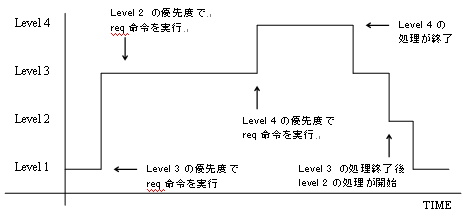
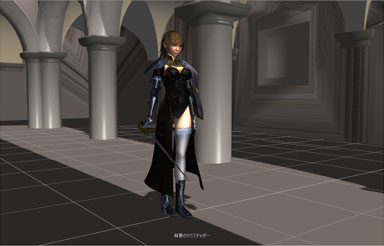

Manaとは
ゲームスクリプトと一口に言ってもプログラマが利用対象の高機能なタイプと、プランナが欲しい簡素なタイプのスクリプトがあると思います。前者はLuaやSquirrelが該当すると思いますが、後者の為のスクリプトとしてManaを開発しました。
Manaはプランナが制御するキャラクターの移動やアニメーション、およびメッセージの制御などを簡単な構造で記述できる事を念頭に開発しています。 その為、Manaには動的型やクラスなど今時の機能がありません。インタプリタを搭載する事が不可能なメモリの少ないプラットフォームに利用する事も考 え、コンパイラと実行環境を分離しています。このため、できるだけ記述ミスを実行前に発見できるようにしたいと考えコンパイラを強化しています。
Manaの特徴
Manaとはゲームのイベントを効率良く開発することを目的に開発されたスクリプトです。世の中の物事というものは、常に並行して行われています。例えば、学校で授業をしている教室においても、教壇で講義する先生、真面目に勉強している生徒、よそ見をしている生徒、無駄話をしている生徒、早弁をしている生徒と、同じ時間に行われている事柄は多種多様です。しかし、プログラムの処理というものは一つ一つの手順を踏んでいきます。従来のプログラムの手法では、このような並列的な処理というものは困難でした。これを擬似的に再現しようとしたものがManaというスクリプトです。
Manaは疑似並列処理を行うことを目的にしたスクリプトで、複数のアクターという単位によって構成されます。アクターとは日本語で直訳する通りに「役者」の意味であり、そのシーン(シチュエーション)に必要なアクターが、そのシーンのソースファイルの中に存在しています。そして、各アクターがお互いの動きに応じて反応しあい、一つのシーンを作り上げていきます。
Manaのメリット
クラスを盛り込んだオーソドックスなスクリプトシステムを作成しましたが、スレッドやオブジェクトの管理などスクリプト作成が複雑になりすぎると思いました。私は企画者が演出を記述できる単純なスクリプトシステムを望んでいたので、同様の条件を望むプログラマにManaは向いていると思います。
Manaはリクエストと呼ばれる割り込みで動作するシステムです。複雑な処理はプログラム側に任せて、タイミングや分岐など演出部分だけをスクリプトに任せることができます。
- 簡単に組み込めるシンプルなエンジン
- シンプルな文法
- アクションをリクエストすることで
- ダイナミックローディング(アーキテクチャによる)
- 移植性が高い。LinuxやDOS、Windows、Mac上で動くだけでなく、ゲーム機などの組み込みシステム上でも動く
アクターとリクエスト
Manaを象徴する概念が「リクエスト」です。これはアクター同士でお互いの動きを命令しあうもので、これによって並列的な動きとアクター同士の連携を実現しています。例えば、バスに乗っていて“次の停留所が告げられたときに、そこで降りる人が複数いて、同時多発的にボタンを押そうとした”というシチュエーションを考えてみましょう。
まず、「バス」というアクターから「次の停留所で降りるアクターはボタンを押せ」というリクエストが「乗客」アクター全員に発せられます。「乗客」アクターの中で該当するアクターが「ボタンを押せ」というリクエストを受け取って実行します。このとき、該当する「乗客」アクターは他に何かしていても(例えば本を読んでいたり、他の人と話していたり、窓の外を見ていたり)、それらを中断してボタンを押そうとします。つまり「ボタンを押せ」というリクエストはその時にアクターがしている動作よりも優先されます。これが「プライオリティ（優先度）」です。
アクターは特に命令がない限り、他の動作をしています。これは一番低いレベルのリクエストを実行しているのと同じ事です。しかし、それよりも優先して行われるべきリクエストが来た場合、それまでしていたことを中断して、そのリクエストを実行しようとします。逆に、あるレベルのリクエストを実行しているときに、それよりも下位のリクエストが来た場合には、現在行われているリクエストが終了するまで、新たに来たリクエストを実行しないで待機させます。
図１を見ていただくとリクエストの動作が分かりやすいと思います。実行中のレベルよりもプライオリティの高い要求は即座に実行し、プライオリティの低い要求は終了後に実行されます。
図１ プライオリティとリクエストの関係

図1はMさんの週末の生活です。プライオリティ１でMさんは昼寝をしていましたが、その後プライオリティ３で、テレビを見たい欲求がおこりました。Mさんは食器を洗っていないことを思い出しましたが、プライオリティ２程度の要求だったので、テレビを見た後にしようと思いました。ところが、プライオリティ４で、恐妻がMさんに風呂掃除(とトイレ掃除)を要求してきました。Mさんはテレビを見ることを中断して掃除を始めます。掃除終了後、優先度３のテレビを見る処理に戻ります。そして、テレビ番組が終了したので、優先度２の食器洗いを嫌々始めます。
上記のようにアクションが終了すると現在よりも低いプライオリティで登録されたアクションに戻ります。また、今までの処理をキャンセルする事も可能です。会社で居眠りしていたイベントを考えた場合、上司に注意された後再び居眠りするアクションに戻るようでは困る事があります。こういった状況のためにManaではアクション終了時にどのプライオリティまで下がるか指定することが出来ます(rollback命令)。
Manaでイベントを作るには
では実際にソースを書く場合、どのような書式になるのでしょう。例１がManaのスクリプトの表記です。
例１ 初めてのManaソース
actor Mr_M
{
action init()
{
print("Hello, world\n");
request(1, self::sleep);
}
action sleep()
{
// 寝るアニメーションを再生
request(3, self::watchTV);
}
action watchTV
{
// テレビを見るアニメーションを再生
request(2, self::washDish);
// 番組が終わるまで待機
}
action washDish()
{
// 食器洗いアニメーションを再生
}
action cleanBathRoom()
{
// 風呂掃除アニメーションを再生
}
}
actor LovelyWife
{
action orderCleanBathRoom()
{
// 風呂掃除を要求
request(4, Mr_M::cleanBathRoom);
}
}
{～}で囲まれた部分、または;までの行をブロックと呼びます。actorブロックは先ほど紹介したアクターに当たる部分です。actionブロックはアクターの行動を定義するブロックです。アクションブロックの名前は予約された名前以外は自由に決めることができます。アクションブロック内に行動を記述することでキャラクターの行動を定義することができます。
その他の情報
| 動作環境 | 非常に移植性が高くほとんどの環境で動作します |
| 対象ユーザ | 開発者 |
| ライセンス | zlib/libpng License |
| オペレーティングシステム | OS非依存 |
| プログラミング言語 | C言語 |
Manaはある程度様々なゲームに利用できるよう言語仕様のみを取り決め、ゲームに必要な命令は外部から登録して利用するようになっています。画像１はサンプルになるゲームのイベントシーンです。中央の主人公はもちろんの事、主人公の触れるドアなどもactorで管理できます。
画像１ 参考画面

詳しい情報
その他の詳しい情報は文章ページに随時アップロードしていきますのでご参照ください。また、バグ報告やサポート希望はチケットページをお気軽にご利用ください。

{kind=link}